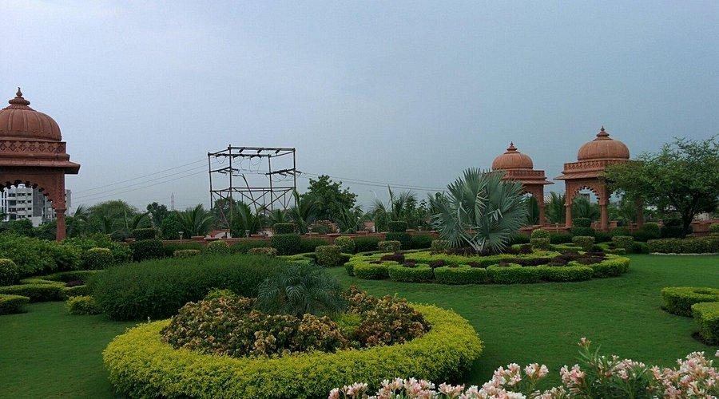
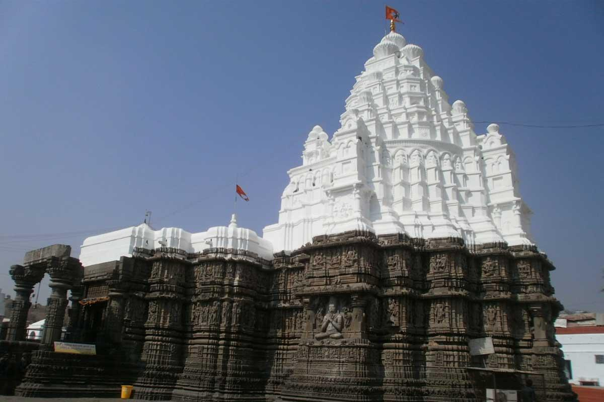
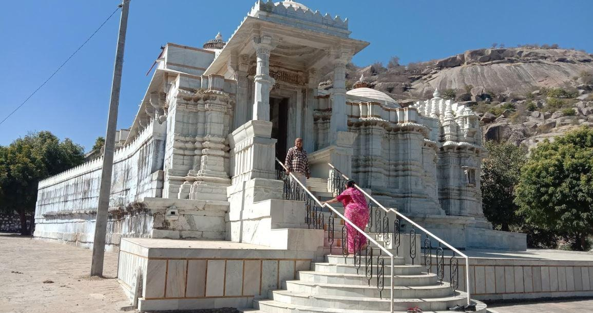
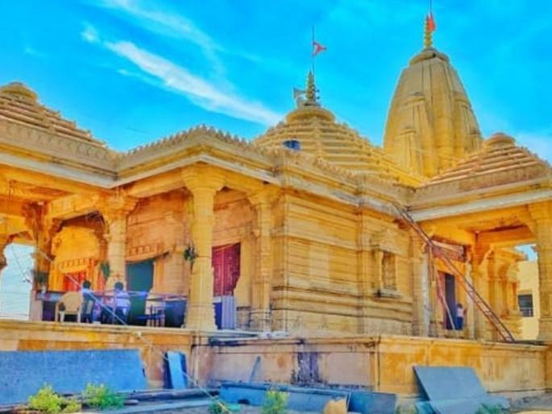
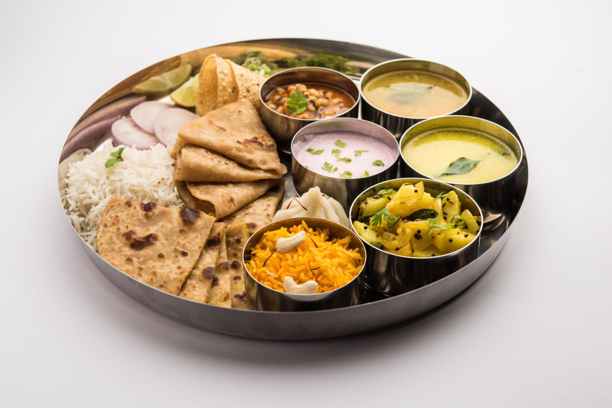
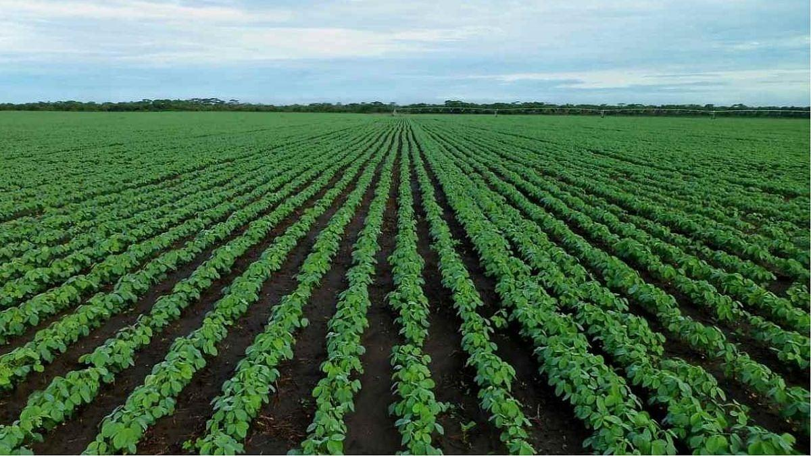
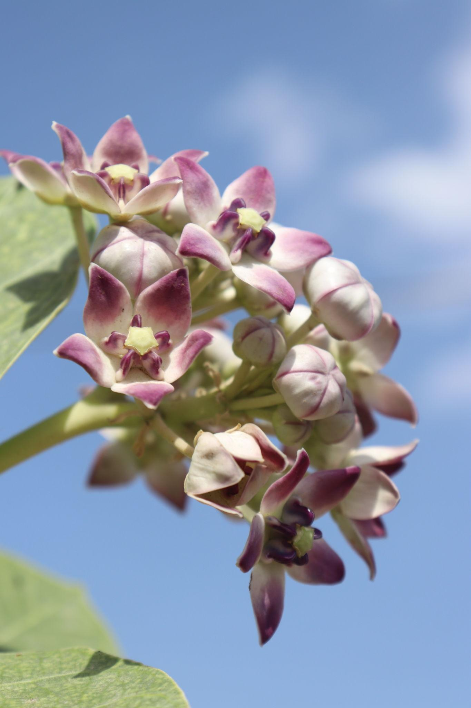
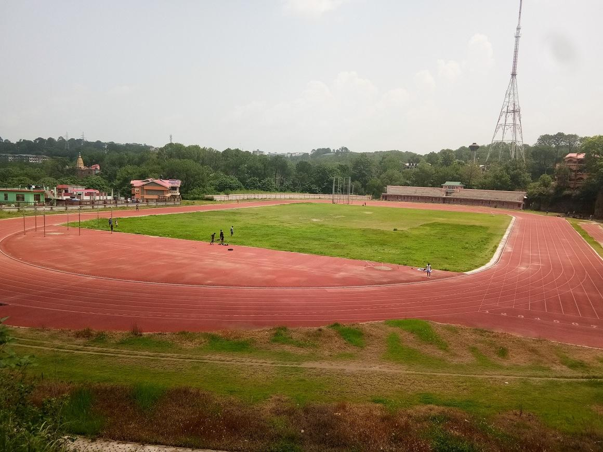

About

Hingoli is a centrally located administrative district in the Indian state of Maharashtra, serving as a tranquil and culturally vibrant destination. Surrounded by the districts of Parbhani, Nanded, Yavatmal, and Washim, it is considered a hidden gem for travelers seeking to experience authentic Maharashtrian rural life mixed with deep spiritual roots. The district covers a geographical area of over 4,800 square kilometers and comprises several small towns and villages that reflect the true essence of traditional Indian living.
- Location:Located in the Marathwada region of Maharashtra, India. It shares borders with Nanded, Parbhani, Yavatmal, and Washim districts.
- Famous as:Home to the ancient Aundha Nagnath Temple, which is revered as one of the 12 holy Jyotirlingas in India. It is also famous for its historic military background and rich cotton and soybean farming.
History

Historically, Hingoli served as a highly strategic military base under the Nizam's regime, a legacy still evident in local area names like Pultan, Tophkhana, and Pensionpura. It was the prominent setting for several major historical conflicts, including battles between Tipu Sultan and the Marathas in 1803, and later actions involving the Nagpurkar and Bhosale forces in 1857. This profound military and historical background makes the district a fascinating region for history enthusiasts exploring Maharashtra's past.
- Hingoli has a rich history linked to ancient kingdoms and British-era military forces. It was once part of the ancient Vidarbha kingdom and the medieval Yadava empire. Under the Nizam of Hyderabad, it became an important military base that saw battles during the 1800s. Its military past lives on in local area names like Paltan (army camp) and Tophkhana (artillery). On May 1, 1999, it was officially made its own independent district.
Culture

The culture of Hingoli is deeply rooted in traditional Maharashtrian customs, primarily influenced by strong spiritual and agrarian lifestyles. The region celebrates major regional and Hindu festivals—including Diwali, Dussehra, and Ganesh Chaturthi—with immense community participation and colorful processions. The local populace largely speaks Marathi, and the area is a melting pot of folk arts, traditional music, and classical handloom crafts.
- Main Festivals:Celebrates Ganesh Chaturthi, Diwali, Dussehra, and the massive annual Aundha Nagnath Fair.
- Traditional Arts:Known for vibrant Gondhal folk music, devotional Bhajans, and traditional Paithani saree handloom weaving.
- Language:The primary spoken language is Marathi, while Hindi and Deccani Urdu are also widely understood.
Tourism

Hingoli is primarily famous for its prominent spiritual and heritage tourism. It is globally renowned for the Aundha Nagnath Temple, which is revered as one of the twelve sacred Jyotirlingas in Hindu mythology. Other significant religious and historical landmarks include the Mallinath Digambar Jain Temple at Shirad Shahpur, the ancient Tulaja Devi Sansthan, and the serene Milind Colony Buddha Vihar.
- Mallinath Digambar Jain Temple: A famous pilgrimage site in Shirad Shahpur featuring a historic Lord Mallinath idol.
- Sant Namdev Sansthan Narsi: The revered birthplace of the famous Bhakti movement saint, Sant Namdev.
- Aundha Nagnath Temple: An ancient and highly sacred eighth Jyotirlinga temple dedicated to Lord Shiva.
Famous Food

The local cuisine in Hingoli heavily features classic Marathwada flavors, which are known for being robust, hearty, and generously spiced. Staples include jowar and bajra rotis, accompanied by spicy lentil curries (amti), the authentic and fiery thecha (a coarse chili and garlic condiment), and various preparations of brinjal (eggplant). Traditional sweets like puran poli and modak are frequently prepared during festive occasions, offering visitors a genuinely authentic taste of regional Maharashtrian cooking.
- Famous Food:Spicy jowar and bajra rotis served with a very hot green chili paste called thecha.
- Local Specialty:Thick, slow-cooked pithla (a savory chickpea flour curry) eaten with hot bhakri and raw onions.
Economy

The economy of Hingoli is predominantly agrarian, with a large majority of the population engaged in agriculture and allied activities. The fertile lands along the local river basins produce significant yields of crops like soybeans, cotton, tur (pigeon peas), and jowar. Aside from farming, the district relies on cottage industries, handlooms (including famous Paithani saree weaving), and growing local trade markets to sustain the economic livelihood of its artisans and small business owners.
- Key Industries: Driven by cotton ginning mills, oilseed processing factories, handloom weaving units, and agro-based cottage businesses.
- Main Crops:Dominated by vast harvests of soybeans, cotton, tur (pigeon peas), and jowar (sorghum).
Environment

The environment and topography of Hingoli feature a blend of flat agricultural plains, rolling terrain, and the gentle, flowing waters of local rivers such as the Purna. The district experiences a semi-arid climate, characterized by hot, dry summers and moderate, pleasant winters. Local environmental and conservation efforts are increasingly focused on agro-forestry, soil management, and maintaining the ecological balance around vital water bodies and dams in the district.
- Climate:Experiences a hot, semi-arid climate with very warm summers and a moderate, rainy monsoon season.
- Key Rivers:Crossed by the life-giving Purna River and the Penganga River, which supply water for farming.
- Protected Areas:Features local forest ranges, while sitting close to the expansive Tipeshwar Wildlife Sanctuary borders.
Sports

Sports and physical recreation hold an important place in Hingoli's cultural fabric, with traditional Indian sports deeply ingrained in the local lifestyle. Wrestling (locally known as kushti) and traditional rural sports such as Kabaddi and Kho-Kho are widely popular, especially among the youth. The district often sees local tournaments and wrestling akharas where young athletes train rigorously, reflecting a broader regional passion for physical fitness and competitive local sports.
- Traditional Sports:Home to traditional Kushti (Indian mud wrestling), as well as fast-paced team sports like Kabaddi and Kho-Kho.
- Focus:Centered heavily on building physical strength through local gyms and training yards (akharas), plus rising support for school cricket tournaments.